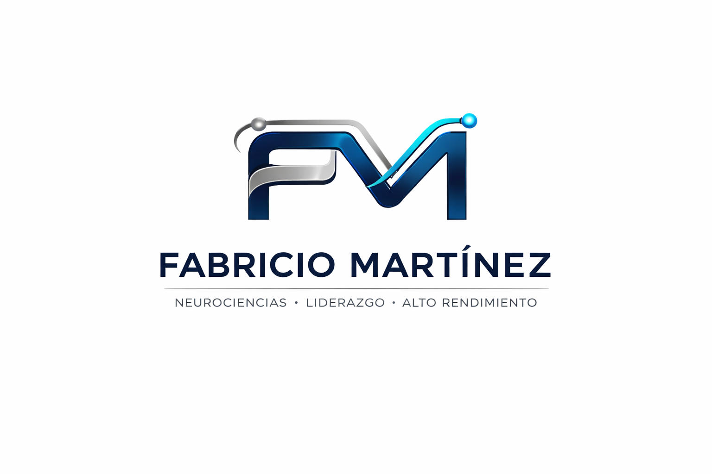

Ayudamos a organizaciones que están desordenadas, agotadas o frenadas por la falta de estructura. Fusionamos neurobiología, dirección general y gestión de talento para destrabar tu crecimiento.
Terminá con la dependencia absoluta del dueño. Creamos manuales de procesos y tableros de control para que tu equipo rinda solo.
Entrenamos mandos medios y equipos de alta competencia para tomar decisiones lúcidas en momentos críticos sin bloquearse.
Diseño integral de capacitaciones in-company corporativas y grandes ferias sectoriales a pedido del cliente.